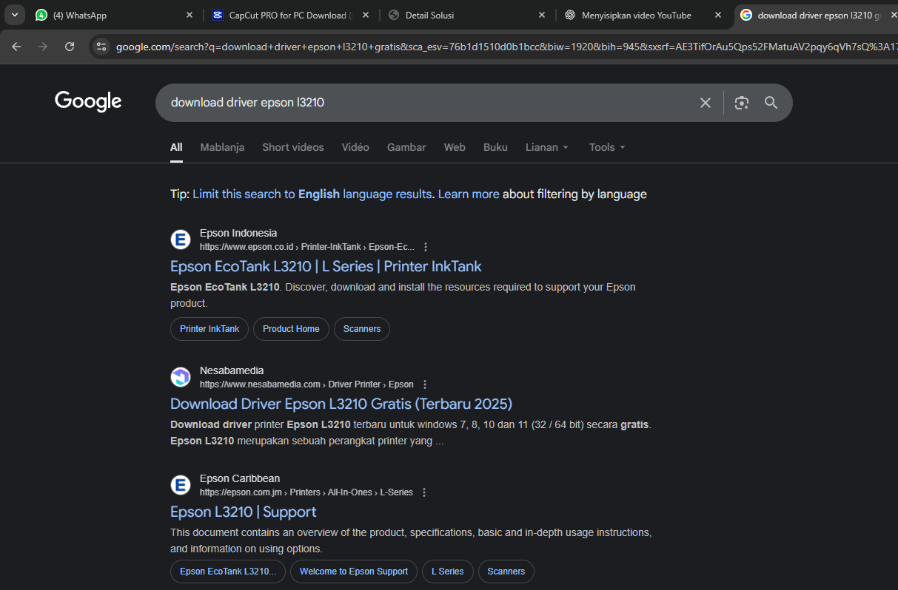
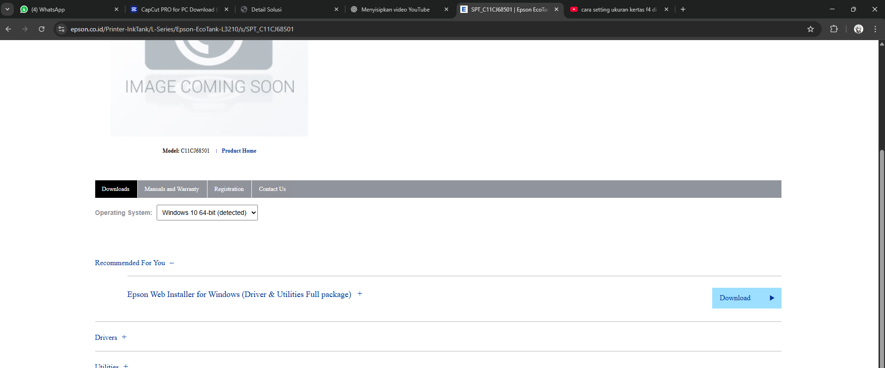
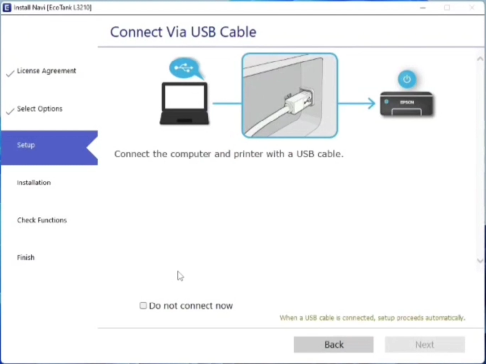

Penjelasan Masalah
Driver merupakan perangkat lunak yang berfungsi sebagai kemudi untuk menjalankan piranti perangkat keras secara terpisah seperti printer, stereo, pen tab dan lain-lain.
Langkah Penyelesaian
- Pada tutorial ini akan dilakukan instalasi driver untuk printer sehingga printer dapat terhubung dengan laptop/komputer
- Pertama-tama anda harus tahu model dari printer yang akan digunakan, model dapat dilihat Pada bagian depan produk berbentuk stiker, atau bisa menggunakan image search pada google.
- Setelah mengetahui model printer, buka google dan ketik download driver epson/canon (nomor seri). 
- Usahakan untuk download driver pada situs resmi printer.
- Buka situs resmi Epson saat akan download Epson akan secara otomatis mendeteksi versi yang kompatibel dengan OS kamputer/laptop kita, kemudian tinggal tekan downlaod. 
- Kemudian jalankan instalasi seperti biasa dengan menekan next, beberapa driver mungkin meminta anda untuk menyambungkan printer dengan komputer jadi ikuti langkahnya. 
- Setelah instalasi selesai anda mungkin diminta untuk restart laptop/komputer ikuti langkahnya.
- Setelah restart printer langsung dapat digunakan.